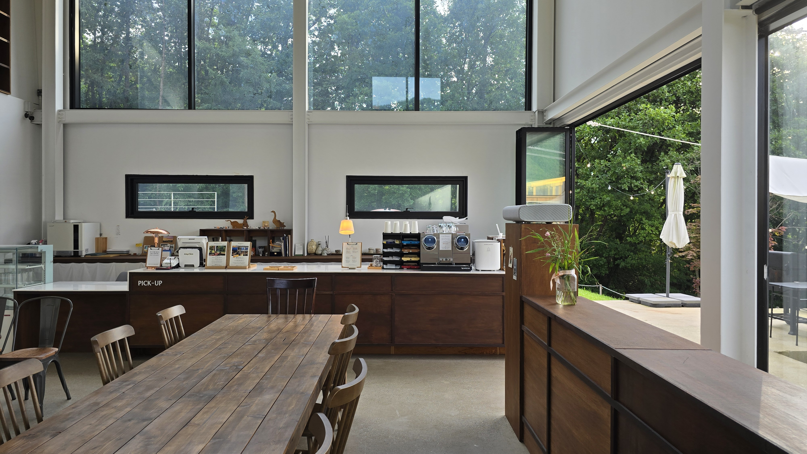

Lounge
자연을 바라보며 천천히 머무는 라운지
아크풀리 라운지는 대관이 없는 날 누구나 방문할 수 있는 공간입니다. 아름다운 자연 속에서 조용히 머무는 시간을 보내고 싶은 분께 잘 어울립니다.
1인 1만원
평일 중심
운영일 확인 필요

자연 속에서 조용히 머무는 시간을 위한 라운지.
큰 창과 서가, 긴 테이블, 자연광이 어우러져 잠깐 들르는 방문보다 천천히 시간을 쓰는 방문에 더 잘 맞습니다. 혼자 쉬는 시간에도, 가까운 사람과 대화하는 시간에도 자연스럽습니다.
전망
서가
대화
데이패스
How To Use
개인 방문, 작은 모임, 첫 경험의 입구로 열려 있습니다.
대관이 없는 날에는 누구나 방문해 공간의 분위기와 전망을 경험할 수 있습니다.
소란스러운 이벤트보다 대화와 머무름이 중심이 되는 이용과 더 잘 맞습니다.
스테이 예약 전 아크풀리를 먼저 가볍게 만나보는 접점이 될 수 있습니다.
Gallery